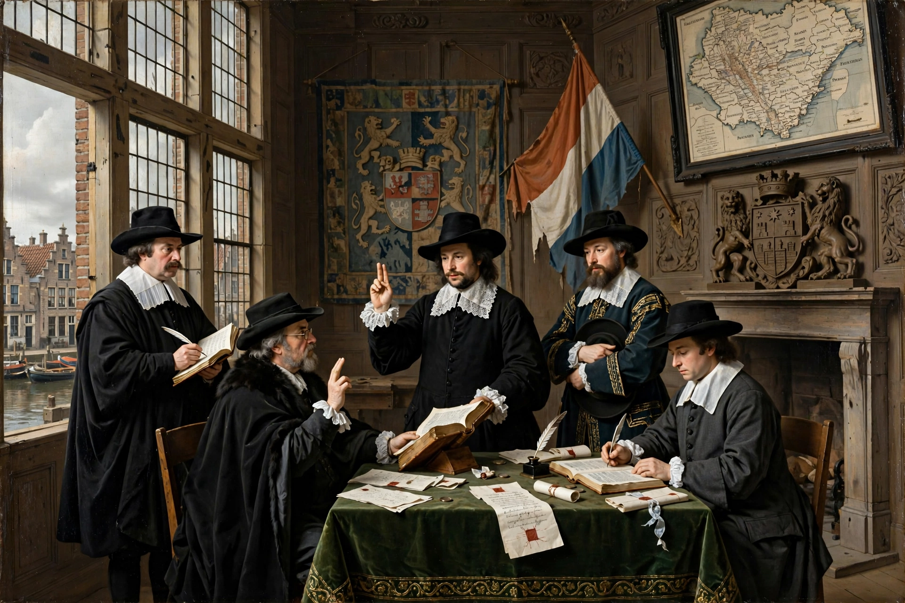

Peace of Münster
| Peace of Münster | |
| Signed | 30 January 1648 |
|---|---|
| Location | Münster, Westphalia |
| Parties | Spain and the Dutch Republic |
| Part of | Peace of Westphalia |

The Peace of Münster is the treaty signed on 30 January 1648 between Spain and the Dutch Republic, ending the Eighty Years' War. Ratified with a famous ceremony in Münster's town hall on 15 May 1648, it formed part of the wider Peace of Westphalia that closed the Thirty Years' War.
Terms
Spain recognised the independence of the Dutch Republic after eighty years of revolt that had begun in 1568. The Republic kept its conquered territories in Brabant and Flanders (the Generality Lands), and the Scheldt remained closed to Antwerp's trade — a clause that long advantaged Amsterdam. Dutch sovereignty over overseas conquests was largely confirmed.
Legacy
The treaty is a founding document of Dutch independence and a landmark of modern diplomacy, with the sworn ratification depicted in Gerard ter Borch's celebrated painting of the oath-taking at Münster.
See also: Peace of Westphalia, Eighty Years' War.